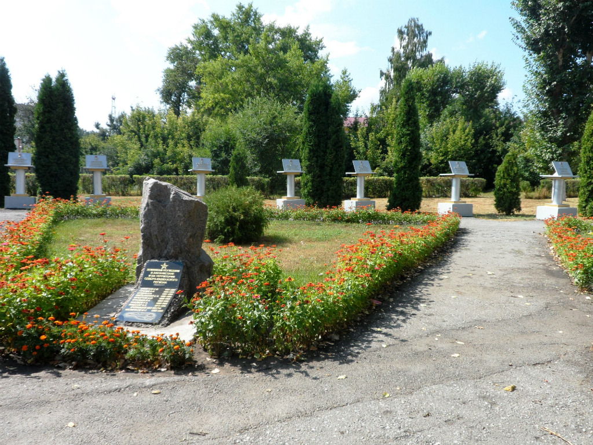

Места нашей области, посвящённые Великой Победе
 Домой
Домой
Аллея Героев (Грязи)
Cквер «Аллея героев» заложен в честь 55-летия Победы, открыт 9 мая 2000 года. Символическую ленточку перерезали ветеран Великой Отечественной войны, полковник в отставке П. И. Меринов и дочь Героя Советского Союза В. Т. Митрошина, бывшего командира эскадрильи бомбардировщиков дальнего действия. Проект разработан главным архитектором И. Б. Пановым.
В сквере установлено 19 памятных досок с отлитыми в металле именами воинов-земляков Героев Советского Союза (И. А. Флеров – Герой Российской Федерации). Этот комплекс в виде дуги занимает 540 квадратных метров.
Изображения:
